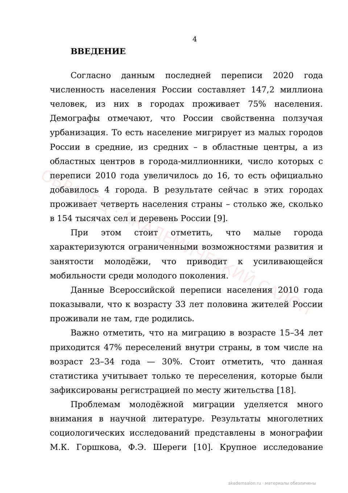

Досье научного руководителя: работа пишется под человека, который будет её принимать
Методичка задаёт формат, но принимает работу не методичка, а живой человек — со своими темами, словарём и представлением о том, что такое «хорошо». Поэтому перед стартом каждой работы, у которой есть научный руководитель, мастерская собирает его досье. Ниже — как это устроено, с настоящими фрагментами из практики.
Зачем вообще читать научрука
Две работы, одинаково аккуратные по ГОСТу, у одного и того же руководителя получают разные оценки. Разница почти всегда не в оформлении, а в попадании: одна написана «в формат вуза», другая — под человека. Руководитель-практик ждёт работающую схему и цифры; руководитель-теоретик — строгий понятийный аппарат и полемику с источниками; руководитель, который двадцать лет пишет об одном методе, безошибочно замечает, что его метод в списке литературы отсутствует.
Досье — это способ узнать всё это до первой строки текста, а не на предзащите, когда переделывать уже дорого.
Как выглядит досье
Вот собирательный фрагмент настоящего досье из практики мастерской — имена, вуз и узнаваемые детали убраны, приём сохранён полностью. Работа — ВКР по социальной работе; руководитель оказался не «кабинетным» преподавателем, а действующим практиком:
- Кто это
- фактстарший преподаватель профильной кафедры — и одновременно руководитель в действующем центре социальной помощи: смотрит на предмет и как преподаватель, и как управленец-практик
- Его темы
- фактсоциальная реабилитация, инклюзивные технологии, комплексная организация помощи — по публичным докладам и программам конференций за три года
- Рабочая формула
- вывод«социальная работа должна быть технологичной, институционально описанной и доказуемой через реально работающий маршрут помощи» — кабинетная теория без практического контура его не убедит
- Что это меняет
- выводпрактическая глава строится как маршрут клиента через конкретные службы, с показателями на каждом шаге — не «рекомендации» списком, а работающая схема
Пометки «факт» и «вывод» разведены сознательно: факт подтверждён открытым источником, вывод — осторожная профессиональная интерпретация. Мы не гадаем — мы помечаем, где что.
Словарь научрука
У каждого руководителя есть язык, на котором он думает: термины из его собственных публикаций и докладов. Когда работа говорит на этом языке, она читается «своей». Из того же досье:
Это не подстройка ради подстройки: терминологическая рамка — половина ответа на вопрос «раскрыта ли тема». Вторая половина — чтобы за терминами стояло содержание.
Вероятные вопросы на защите
Финальный раздел каждого досье — прогноз вопросов. Он строится из повторяющихся акцентов руководителя: о чём он говорит в докладах, к чему цепляется в чужих работах, что спрашивал у прошлых выпускников. Примеры из практики:
Клиент получает эти вопросы вместе с готовыми линиями ответа — на защите они перестают быть сюрпризом.
Откуда берутся данные
Только открытые источники — то, что руководитель сам опубликовал о себе как о специалисте:
- официальные страницы вуза: должность, дисциплины, научные интересы;
- публикации в eLibrary/РИНЦ и материалы конференций — темы и словарь;
- публичные доклады, программы семинаров, методические материалы;
- требования кафедры и методичка — как рамка, поверх которой живёт человек.
Этика досье. Мы собираем профессиональный портрет, а не личный: никакой частной жизни, только научная и преподавательская роль. Досье готовится для одной работы, никому не передаётся и не публикуется — фрагменты в этой статье обезличены до неузнаваемости. В документах мастерской клиент — «Заказчик»; та же конфиденциальность укрывает и руководителей.
Как досье превращается в оценку
Пример из практики. Магистерская по психологии: из досье стало ясно, что руководитель годами работает с тревожностью и доверяет классическим методикам с проверенной валидностью. Эмпирику собрали на Спилбергере—Ханине и Прихожан — тех самых инструментах, на которых руководитель вырос как исследователь. Вопросов к выбору методик на защите не было вовсе; работа прошла на «отлично».
Страницы этой работы (обезличенные — тема перефразирована, имена и вуз скрыты) — прямо здесь:



Образцы наших текстов · PDF
Введение ВКР · Глава с анализом · Список литературы по ГОСТу — фрагменты реальных работ, обезличены.
Когда досье собирается
Под каждую работу, у которой есть научный руководитель, — до старта, вместе с планом. Отдельно оно не продаётся и не тарифицируется: это часть подхода, а не опция. Если руководителя ещё не назначили, досье готовится, как только появится имя, — и план при необходимости корректируется бесплатно.